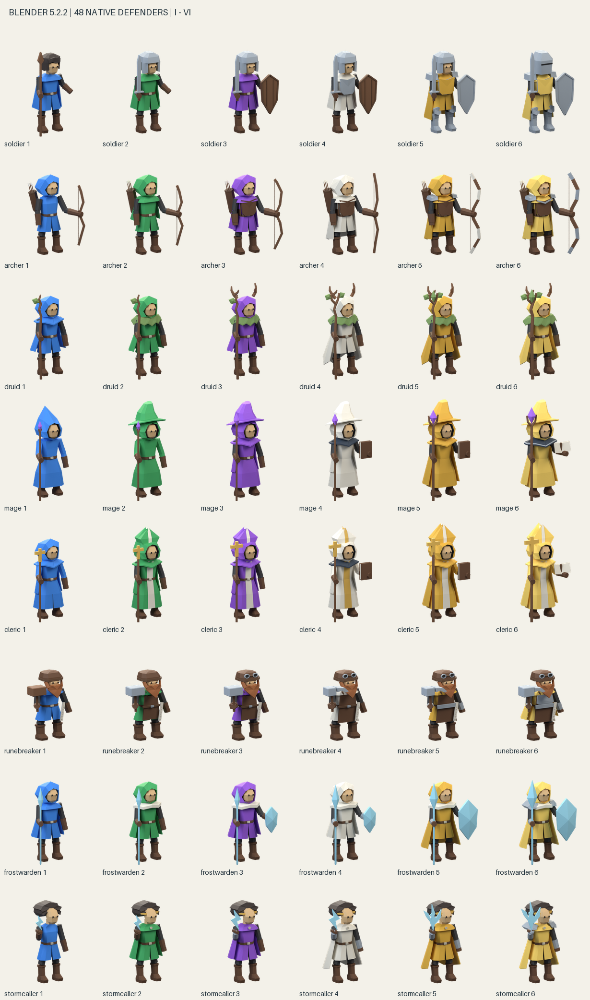

Osm tříd, každá v úrovních I–VI. Nové fyzické modely, osm editovatelných scén a 192 ortografických porovnání. Otevřít 3D ateliér · Otevřít hru
Technické kontroly: 48/48. Zpětný import: 48/48. Testy hry: 338/338. Cleric má latinský kříž; Frost Warden celé ledové kopí. Efekty jsou oddělené od GLB a ve hře je vytváří renderer.
Všech 192 překryvů a rozdílů · Výsledky všech 48 modelů (CSV) · Souhrn kontrol · Nezávislé kontroly geometrie · Skutečná shoda nativních scén a GLB · Specifikace a skutečná měření · Výsledky testů hry
| Třída | Technická kontrola | Trojúhelníky GLB | Průměrná IoU |
|---|---|---|---|
| soldier | 6/6 | 1152–1556 | 0.6660 |
| archer | 6/6 | 1166–1418 | 0.6711 |
| druid | 6/6 | 1210–1482 | 0.5474 |
| mage | 6/6 | 964–1424 | 0.6366 |
| cleric | 6/6 | 1126–1354 | 0.6605 |
| runebreaker | 6/6 | 1272–1864 | 0.6245 |
| frostwarden | 6/6 | 1114–1254 | 0.6615 |
| stormcaller | 6/6 | 976–1260 | 0.6093 |

Nativní scény a opakovatelný generátor: osm .blend scén · Blender Python generátor. Známá výjimka: stříbrný hřbetní plát rukavice Stormcallera VI podle závazných poznámek. Nativní tenká zlatá aura přibližuje měkkou aditivní auru hry.